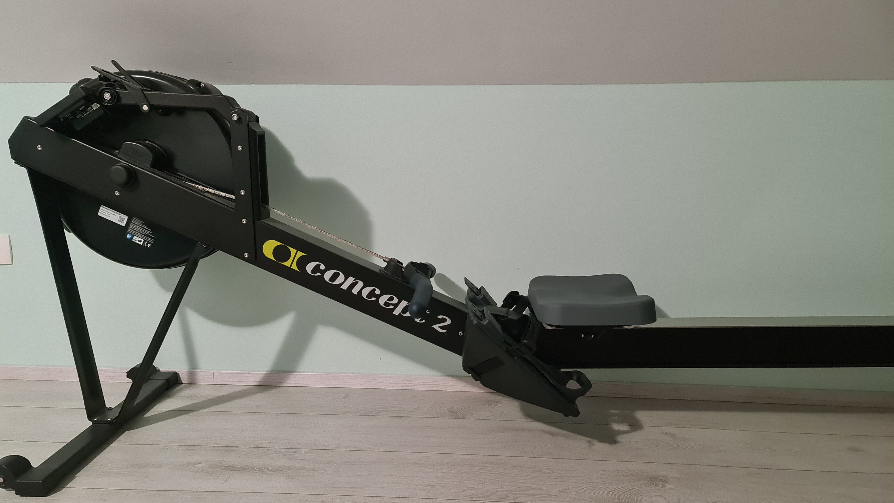

Notranje veslanje, imenovano tudi "indoor rowing", je oblika veslanja, ki se izvaja na posebnih veslaških napravah, imenovanih ergometri. Te naprave posnemajo gibanje veslaških čolnov in omogočajo veslačem, da izvajajo vadbo v notranjih prostorih.
Indoor rowing se uporablja kot vadba za pripravo na zunanjem vodi veslanje, kot tudi kot samostojna vadba, ki ponuja celovit trening za celotno telo. Med vadbo na ergometru se veslači premikajo naprej in nazaj na sedežu, medtem ko potiskajo in vlečejo vesla z rokami in nogami. Pri tem se aktivirajo mišice v nogah, rokah, hrbtu in trebuhu.
Ena izmed prednosti indoor rowinga je, da je lahko prilagojen različnim stopnjam fitnesa in izkušenj, saj lahko veslači spremenijo intenzivnost vadbe s spreminjanjem hitrosti, intenzivnosti in trajanja vadbe. Poleg tega lahko naprava zabeleži statistiko, kot so čas, prevožena razdalja in porabljene kalorije, kar lahko pomaga pri spremljanju napredka v vadbi.
Notranje veslanje se uporablja tudi za tekmovanja, kot so svetovno prvenstvo v notranjem veslanju in druge lokalne in mednarodne tekme.
